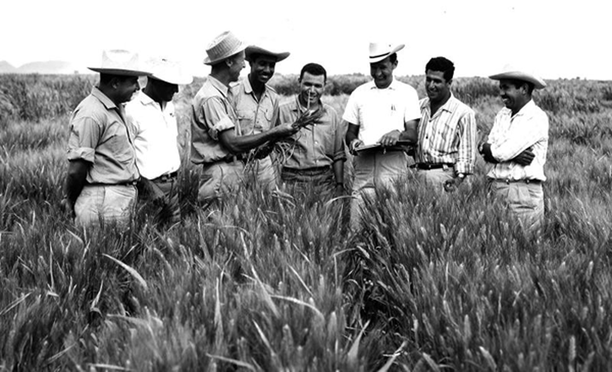

Norman Borlaug in the field teaching a group of young trainees. Photo courtesy of CIMMYT.

Norman Ernest Borlaug was an American agronomist who led initiatives worldwide that contributed to the extensive increases in agricultural production termed the Green RevolutionNorman Borlaug